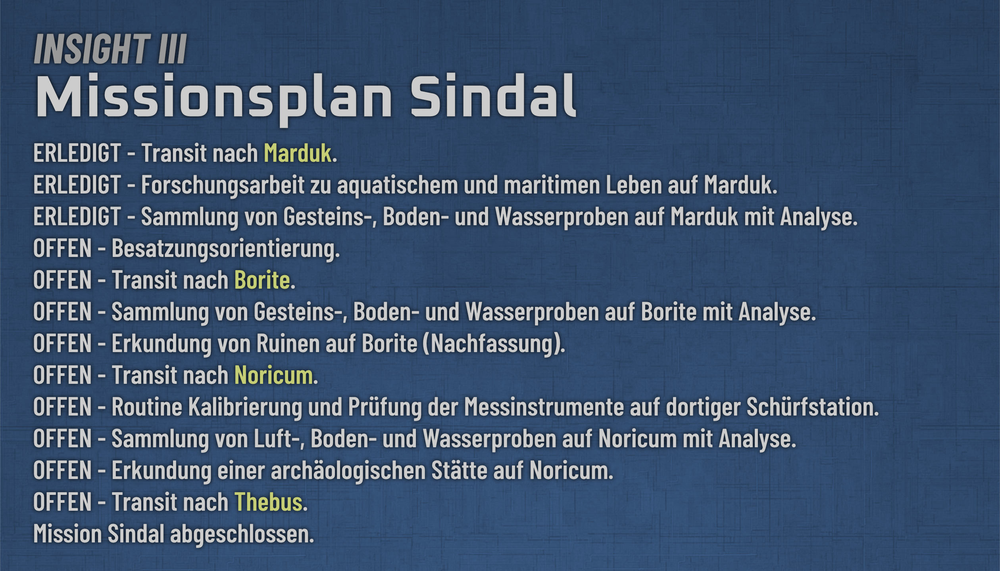
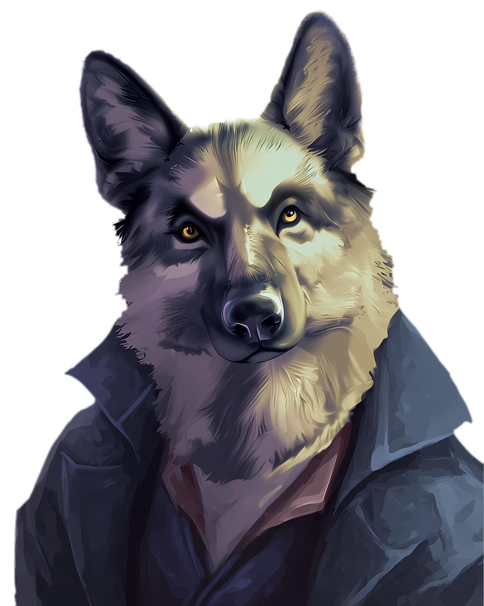
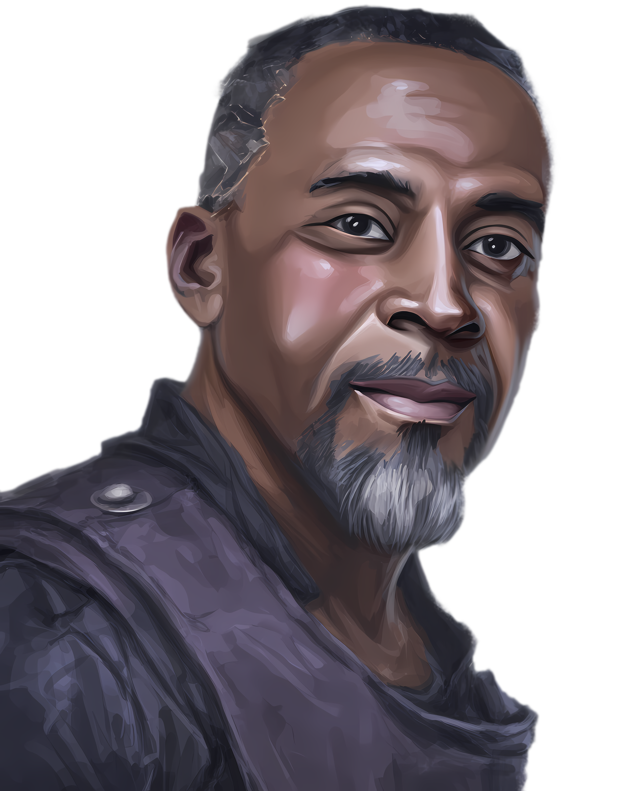
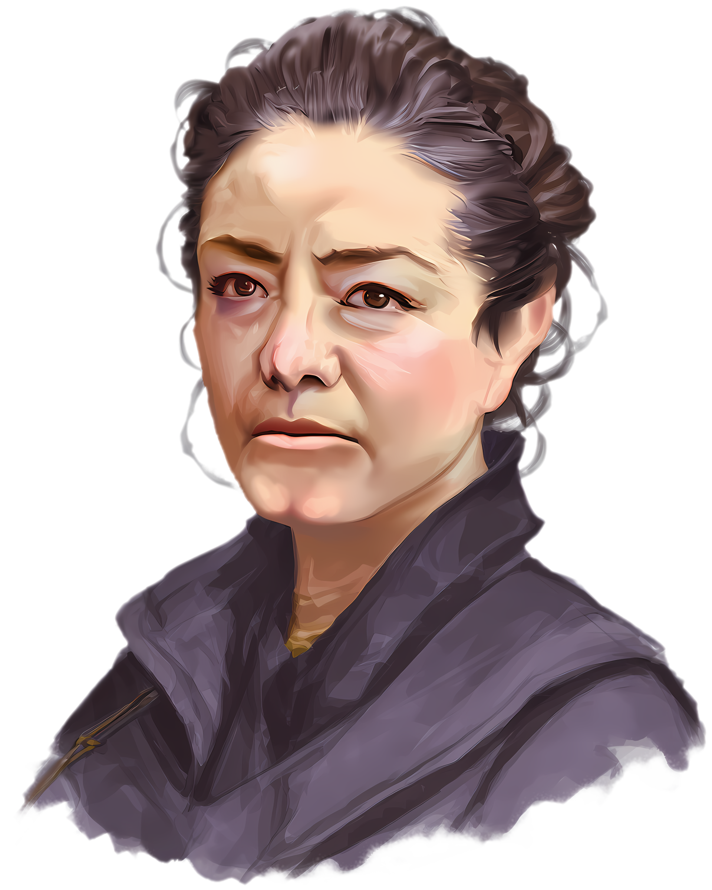
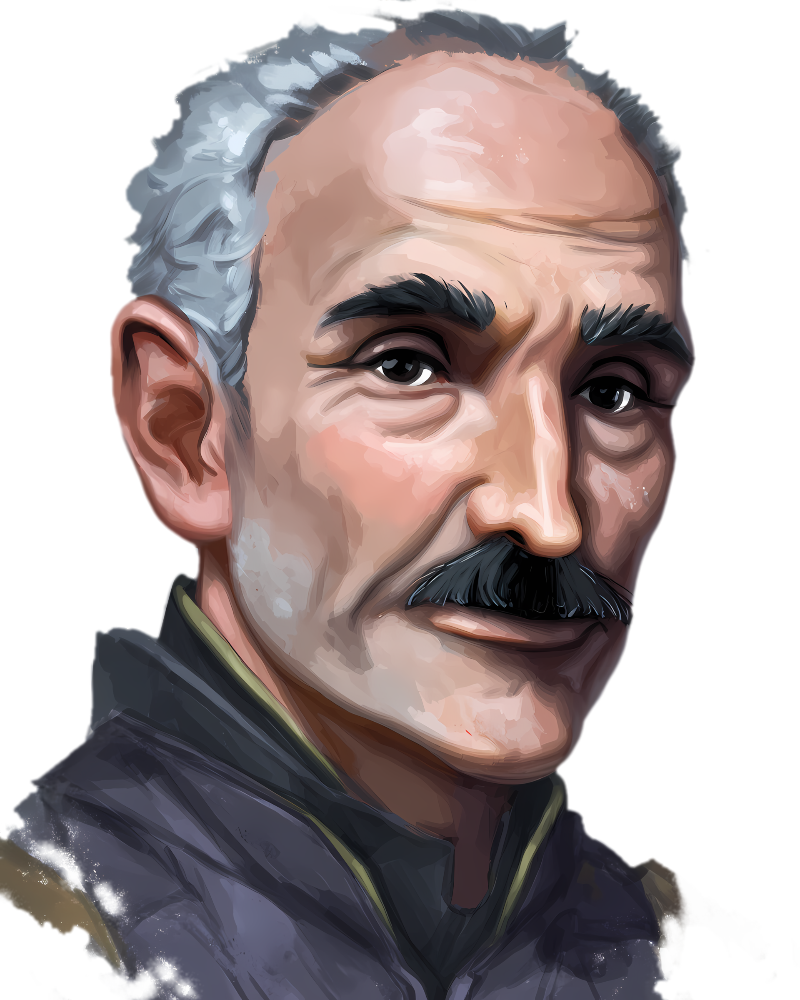
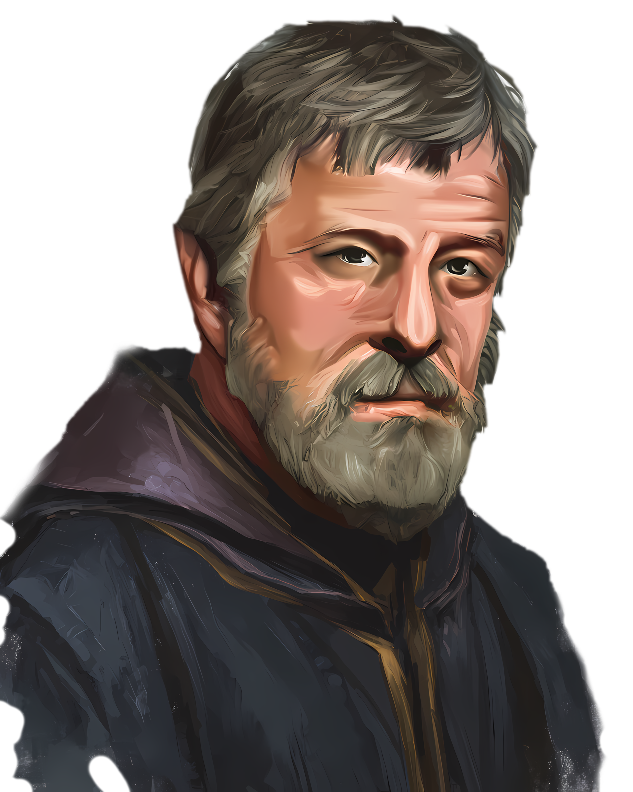
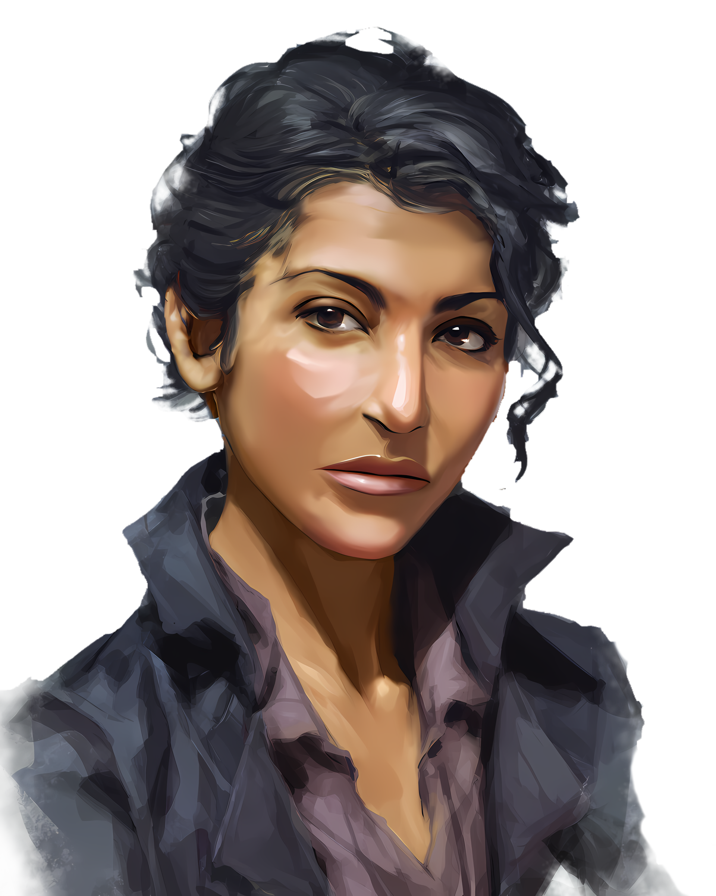

1.2 — Willkommen in der Wissenschaft
Bordbuch von Lekhan, Eintrag 091-1105
Es gibt Augenblicke, in denen man sich fragt, welche Entscheidung einen eigentlich an einen bestimmten Ort geführt hat. Bei mir war dieser Ort eine Höhle auf einem angeblich unbewohnten Kontinent, umgeben von primitiven Menschen, die es angeblich nicht gab, während draußen ein Rudel bemerkenswert kluger Raubtiere meinen Bruder belagerte, die angeblich nicht existierten.
Die ehrliche Beantwortung dieser Frage führt mich momentan zu sehr in den Kaninchenbau der Verschwörungstheorien, so dass ich sie erst einmal zurückstelle.
Sekhar hielt oben in der Ruine Wache, während ich mit Karine, Arthur und dem ruhiggestellten Phynan in der Höhle blieb. Ich war müde, dreckig, mit Blut beschmiert, von dem ich nicht einmal sicher sagen konnte, wem es gehörte, und ungefähr so weit außerhalb meiner natürlichen Umgebung, wie ein Raumjäger in einem Fischteich. Gleichzeitig war da diese unangenehme Erkenntnis, dass ich von uns allen vermutlich trotzdem zu denen gehörte, die noch am ehesten etwas tun konnten. Ich war größer und stärker als meine Begleiter und konnte im Dunkeln besser sehen, als die meisten Menschen. Es ist erstaunlich, wie niedrig die Anforderungen an Kompetenz werden, wenn alles den Bach runter geht. Ich hätte mich am liebsten in eine Ecke gesetzt und geheult.
Von oben fielen gelegentlich Schüsse. Über Funk erfuhr ich gerade genug, um zu wissen, dass die Tiere einfach nicht fliehen wollten. Wilde Tiere sollten auf Schüsse mit Flucht reagieren. Diese hier reagierten offenbar mit dem überlegten Testen von Strategien. Das sollte es so nicht geben.
Dann kamen die Menschen. Sie strömten an uns vorbei in die Höhle, Männer, Frauen und Kinder, bewaffnet mit uralten Bolzenwaffen und selbstgebauten Vorderladern. Einen Moment lang war ich sicher, dass wir gleich erklären müssten, weshalb wir ihr Lager besetzt hatten. Stattdessen sahen sie uns nur verwirrt an oder ignorierten uns und liefen weiter. Draußen mit den Tieren schien für sie die deutlich schlimmere Variante zu sein, als mit uns hier drinnen.
Das war zugleich beruhigend und ausgesprochen beunruhigend.Eine ältere Frau kam auf mich zu. Wir hatten keine gemeinsame Sprache, und bis die Transceiver irgendwas ausrichten konnten, würden Stunden vergehen. Also taten wir, was vernünftige Wesen seit Jahrtausenden tun, wenn ihre Wörter versagen: Wir setzten uns ans Feuer und teilten Essen. Ich möchte anmerken, dass ich dies so zum ersten mal in meinem Leben tat.
Die ganze Zeit hatte ich das Gefühl, dass sie mir etwas Wichtiges sagen wollte, nur was es war, blieb mir ein Rätsel.
Sie zeigte großes Interesse an meiner Laserpistole. Für sie musste das Ding wie Zauberei wirken: kein Knall, kein Mündungsfeuer, kein Geschoss, nur ein Einschlag mit viel Rauch. Es gibt diesen alten Satz darüber, dass ausreichend fortgeschrittene Technik von Magie nicht zu unterscheiden sei. Vermutlich stimmt er. Sie schien in der Pistole auch die Lösung für irgendein Problem zu sehen.Arthur wurde währenddessen immer unruhiger. Erst dachte ich, die Angst hole ihn nun doch ein, nachdem er sich anfangs so gut gehalten hatte. Nach einem Shuttleabsturz, dem Tod mehrerer Mitreisender und als Beute von Wölfen hätte ich ihm das nicht verdenken können. Aber es ging ihm offenbar um seine… Fangrechte? Eigentlich sollte ich das verstehen, aber in der Situation wollte es mir, nicht in den Kopf. Wieso war das jetzt wichtig? Er musste regelrechte Existenzängste haben, sonst wäre es nicht so aggressiv.
Als die Schüsse von oben nicht aufhörten, nahm ich etwas Essen und ging zu Sekhar. Vor dem Eingang lag eines der Tiere. Schwer verwundet, aber noch am Leben. Es knurrte gurgelnd zu uns herüber und sah uns mit einer Bosheit an, die ich einem sterbenden Tier nicht zugetraut hätte.
Sekhar und ich versuchten zu reden, doch unsere Blicke wanderten immer wieder dorthin. Keiner von uns wollte das Tier weiter leiden sehen. Keiner von uns wollte es erschießen. Nicht mit dem Rudel da draußen. Was, wenn sie den Gnadenschuss als Hinrichtung verstünden?
Noch bevor Sekhar beginnen konnte, zu essen, griffen sie erneut an. Wieder planvoll, wieder eine neue Taktik testend. Einige kamen frontal und zogen das Feuer auf sich, während andere sich von der Seite näherten. Sie wussten, dass die Vorderlader der Einheimischen nach jedem Schuss lange nachgeladen werden mussten. Sekhars halbautomatische Waffe hatte dieses Spiel bereits durcheinandergebracht. Meine Laserpistole gefiel ihnen noch weniger.
Trotzdem erreichte eines der Tiere einen der beiden einheimischen Wächter. Es packte ihn, riss ihm den Hals auf und ließ ihn in der Nähe seines verwundeten Rudelgefährten liegen, als ob es ein Zeichen war, Auge um Auge.
Ich weiß, wie dumm es klingt, was ich danach tat. Wenn ich darüber nachdenke, weiß ich nicht, wie ich es erklären soll. Ich glaubte, das Rudel wolle seinen Gefährten zurück. Vielleicht habe ich zu viel in diese Tiere interpretiert, wo nur Instinkt war? Vielleicht wollte ich unbedingt glauben, dass man mit diesen Wesen auf irgendeine Weise kommunizieren konnte. Wie intelligent muss ein Wesen sein, um kein Tier mehr zu sein? Wie oft wurde ich als Tier bezeichnet? Ich kann aus der Erinnerung sagen, dass mir keiner dieser durchaus intelligenten Gedanken durch den Kopf gegangen war. Ich war einfach nur am Ende nach den Ereignissen dieses Tags und folgte einem Gefühl.
Ich verließ die Deckung und ging zu dem verwundeten Tier. Mein Plan war, es würdevoll aufzuheben, ein Stück in Richtung des Rudels zu tragen und dort abzulegen. In meinem Kopf war es eine bemerkenswert gute Geste. Friedlich, mutig und respektvoll.
Leider war dieses verdammte Tier schwerer als erwartet und vollkommen ohne Körperspannung. Was folgte, dürfte weniger nach einer würdevollen Übergabe ausgesehen haben, sondern nach jemandem, der Abends noch eben mal den Müll raus bringt.
Dann griff das Rudel an. Keine Ahnung wie viele Tiere; sie kamen gleichzeitig aus der Dunkelheit. Eines erwischte meinen Oberschenkel und riss eine tiefe Wunde hinein. Bevor sie mich vollends zu Boden bringen konnten, erklang aus der Nacht ein tiefer, gutturaler Laut, fast als würden schwere Kieselsteine in einen Waschtrog geworfen werden. Der Angriff brach augenblicklich ab.
Während ich mich zurückschleppte, zogen die Tiere ihren inzwischen verendeten Gefährten fort. Ich will glauben, dass ihr Leittier meine Absicht verstanden hatte und wütend seine Soldaten zurückgepfiffen hat. Denn sonst hätte ich mein Leben ohne jeden vernünftigen Grund aufs Spiel gesetzt und jetzt kann ich zumindest behaupten, gewusst zu haben, was ist, obwohl ich einfach nur Glück hatte.Sekhar wollte anschließend den verwundeten Einheimischen bergen. Der zweite Wächter gab ihm jedoch unmissverständlich zu verstehen, dass sie den Toten zu den Tieren in die Dunkelheit werfen sollten. Eine Opfergabe? Ein Austausch? Teil eines alten Abkommens? Ich werde daraus nicht schlau.
Danach verschwand der Wächter nach unten in die Höhle, schickte eine Heilerin nach oben, die sich um meine Wunde kümmerte, ich lies sie einfach machen. Von unten konnte man laute Stimmen hören, es klang wie Streit. Dann drangen Schüsse und Kampfgeräusche aus der Tiefe. War Arthur durchgedreht?
Sekhar rannte hinunter, ich hielt die Stellung. Ich hätte ihm gern hinterhergerufen, dass er mich nicht allein lassen soll. Statt dessen hielt ich mir mein Bein, schrie leise, starrte mit Tränen in den Augen in die Dunkelheit und versuchte, auf Bewegungen zu achten, aber immer wieder verschwammen die Konturen.
Was in der Höhle geschah, kenne ich nur aus Sekhars späterem Bericht. Die Tiere hatten einen Zugang gefunden, einen Riss, eine Spalte in einer Wand. Es muss ein Gemetzel gewesen sein. Sie brachen in die Wohnhöhle ein und töteten wahllos. Sekhar half, sie zurückzudrängen, rettete ein Kind und verschloss mit den Einheimischen den Zugang. Arthur überlebte den Angriff nicht. Ich hatte mich noch kurz zuvor über seine verdammten Fangrechte geärgert. Jetzt hätte ich ihm gern noch eine Weile dabei zugehört und verstanden, worum es ihm genau gegangen war.
Welche Tiere gehen derart hohe Risiken ein, um ihre Opfer zu verwunden und zu töten, nicht aber zu fressen? Wieso verhielten sie sich Sekhar und mir gegenüber fast schon respektvoll? Oder bildete ich mi das ein? Das ergab keinen Sinn.Erneut gab es keine Zeit zum Durchatmen, denn wenige Meter vor den Ruinen setzte ein schnittiger Gleiter auf. Für einige unangenehme Herzschläge wusste ich nicht, ob dort unsere Retter landeten oder ein Schiff der Oghma, die bereits das Shuttle abgeschossen hatten.
Es war die Chubb, gesteuert von Lynne Morgan, die ich bereits aus den Akten unserer Mission kannte.
Bei der Evakuierung verbargen sich die Einheimischen. Sie machten deutlich, dass niemand von ihnen erfahren sollte. Sie wussten also entweder, was GeDeCo mit ihnen tun würde, oder hatten zumindest gelernt, dass Besucher vom Himmel selten etwas Gutes bringen.
Ihr Geheimnis ist vorerst bei uns sicher. Auch Karine und Phynan scheinen verstanden zu haben, dass Schweigen hier für alle die bessere Wahl ist.
Im Tiefhafen verwandelte sich unser Absturz erstaunlich schnell in einen reinen Verwaltungsakt. Ein Shuttle war zwar abgeschossen worden, Menschen waren gestorben, unbekannte Bewohner lebten auf dem angeblich unbewohnten Kontinent und intelligente Raubtiere führten dort offenbar einen kleinen Krieg. Die GeDeCo behandelte das Ganze ungefähr wie eine verspätete Gepäcklieferung. Ich möchte anmerken, dass wir die Menschen und Raubtiere unter den Tisch fallen ließen, ich sie hier aber nochmals zu Erhöhung der Dramatik erwähne.Die Verabschiedung von Phynan und Karine ging so schnell, dass mir gerade noch Zeit blieb, Karine nach ihren Kontaktdaten zu fragen. Wer weiß, vielleicht komme ich hier ja nochmal vorbei?
Meine Wunde wurde professionell behandelt. Danach erledigten wir im Büro des Hafenmeisters Alexeis Drabahn binnen weniger Minuten einige Formalitäten, für die man uns offenbar unbedingt auf die Oberfläche hatte bringen müssen. Warum das nicht im Orbit möglich gewesen wäre, blieb unklar.
In dem Büro trafen wir auch auf Dr. Alphred Banks, den Leiter der wissenschaftlichen Mission, der wir nun von der GeDeCo offiziell zugeteilt waren. Sekhar als Pilot und ich als Ökonom und Buchhalter. Inoffiziell sollen wir sämtliche relevanten Forschungsergebnisse für Drinax sichern. Nach diesem Tag erschien mir Industriespionage als verlockender Urlaub.
Die Chubb brachte uns zur Insight III. Die Pinasse war gepflegt, schnell und in ausgezeichnetem Zustand. Das Forschungsschiff nicht so sehr. Es war fünfundvierzig Jahre alt und sah älter aus. Man versuchte noch nicht einmal, Unordnung, Schmutz und vernachlässigte Wartung vor uns zu verbergen.
Es war spät und Banks beschränkte sich auf eine kurze Führung, die Besatzung schlief bereits. Dann stand ich unter der heißen Dusche. Fast eine Stunde, und sah zu, wie sich Staub, Dreck, Steine und Blut aus meinem Fell lösten. Ich wusch mich gründlich, spülte nach und begann an einigen Stellen noch einmal, obwohl das Wasser längst klar war.Am nächsten Morgen lag ich lange vor dem Wecker wach und hatte das Gefühl, kein Auge zubekommen zu haben. Schlaftrunken zwang ich mich, wach auszusehen und freundlich die Besatzung kennenzulernen.
Als Ersten lernte ich Vincent Price, den Bordmechaniker, an der Kaffeemaschine kennen. Mit ihm konnte ich mich eigentlich ganz gut unterhalten, und ich war froh, dass wenigstens dieser Morgen angenehm anfing. Im Nachhinein werde ich allerdings das Gefühl nicht los, dass er mich bei den anderen absichtlich ins offene Messer laufen ließ. Er kennt diese Besatzung. Ein kleiner Hinweis hätte gereicht. Vielleicht unterstelle ich ihm auch etwas, weil ich mich über mich selbst ärgere.
Lynne Morgan kann Aslan offenbar nicht ausstehen. Ich realisierte das nicht, erwischte sie auf dem falschen Fuß und machte den Fehler, das mit zusätzlicher Offenheit und Charme beheben zu wollen. Das funktioniert bei vielen Menschen. Bei Lynne führte es hauptsächlich dazu, dass sie mich noch feindseliger ansah.
Maria und Ronaldo Corswaine scheinen seit Ewigkeiten miteinander verheiratet zu sein und verbringen diese Ewigkeit abwechselnd als Paar und in Scheidung lebend, aktuell letzteres. Vor wenigen Tagen soll Banks Maria bei einer Erkundung versehentlich in eine Art Cenote gestoßen haben. Ihr passierte zwar nichts, doch Ronaldo wirft Banks nun vor, er habe seine Ex-Frau umbringen wollen. Das gibt nur einen kleinen Einblick in die Dynamik dieser Besatzung.
Dr. Henderson Varnix wirkt müde von dem Schiff, der Besatzung und möglicherweise der Mission. Er weiß nicht, was er als Physiker zu den geplanten Untersuchungen beitragen soll, spricht von Urlaub oder Trennung und tut nichts davon.Überhaupt scheint auf diesem Schiff jeder schon einmal die Führung übernommen, sie verloren oder bestritten zu haben. Der Umgangston ist respektlos, Zuständigkeiten sind Verhandlungssache, und die Wissenschaftler kennen einander offenbar so lange, dass vermutlich jeder mit jedem schon eine Freundschaft, Feindschaft, Affäre oder eine besonders komplizierte Kombination daraus hatte.
Maria hatte bislang auch die Bücher geführt, Banks wollte das übernehmen und die GeDeCo hat entschieden, mir diese Aufgabe zu übertragen. Das macht mich bei ihm vermutlich nicht beliebter.
Er ist allerdings derjenige, der die gesamte Mission angestoßen hat: Marduk, Borite, Noricum und Thebus, auf der Suche nach Relikten des Sindalischen Krieges. Gesteinsproben, Wasserproben, Ruinen und archäologische Funde. Schon auf Marduk wollte er die Kontinente untersuchen, bekam jedoch keine Genehmigung. Allerdings hat er merkwürdige Tiere beobachtet. Sie sollen am Ufer alte Fischernetze zum Fischen benutzen…
Damit ist zumindest sicher, dass ich mir ihre Intelligenz nicht vollständig eingebildet habe.
Ich versuchte, bei der Besatzung einen guten ersten Eindruck zu hinterlassen. Dabei ging ich zu offen, zu forsch und vermutlich auch etwas zu flapsig auf die Menschen zu, die mich für einen Aufpasser von GeDeCo halten und Aslan gegenüber ohnehin Vorbehalte haben.
Kurz gesagt: Es lief beschissen und ich weiß nicht, was in mich gefahren war. Klingt nach eine tollen Start auf eine Mission mit meinem Bruder, auf die ich mich eigentlich gefreut hatte.
Ich brauche Urlaub.
Zusammenfassung
- Belagerung der Ruinen durch die intelligenten Raubtiere; die einheimischen Mardukaner suchen zeitgleich Zuflucht dort und teilen mit den Zwillingen (per Zeichensprache) Feuer und Essen.
- Lekhan trägt ein sterbendes Raubtier zum Rudel — wird angegriffen und schwer am Bein verletzt, aber das Leittier bricht den Angriff mit einem gutturalen Ruf ab. Hierarchie und Verständigung der Tiere bestätigt.
- Später brechen die Raubtiere durch einen Riss in die Wohnhöhle ein: Arthur stirbt, Sekhar rettet ein Kind und hilft, den Zugang zu verschließen.
- Rettung durch Lynne Morgan mit der Chubb; Schweigepakt mit den Mardukanern, den Karine und Phynan instinktiv mittragen.
- Im Tiefhafen: kurze Formalitäten bei Hafenmeister Alexeis Drabahn; Karine bleibt auf Marduk und gibt Lekhan zum Abschied ihre Kontaktdaten.
- Ankunft an Bord der Insight III: Crew offen dysfunktional (Alphred hat Maria wenige Tage zuvor im „Cenote-Vorfall” fast getötet), Lynne kann Aslan nicht ausstehen, Lekhans Charmeversuch am nächsten Morgen misslingt gründlich.
- Alphred erwähnt beiläufig, er habe auf Marduk Tiere beim Fischen mit alten Netzen beobachtet — bestätigt unabhängig die Intelligenz der Marduk-Fauna.

Begegnungen
- Dr. Alphred Banks — Wissenschaftler auf der Insight III, Fachgebiet Kosmologie, Anführer der Mission “Sindal”
- Dr. Henderson Varnix — Wissenschaftler auf der Insight III, Fachgebiet Physik
- Dr. Maria Corswaine — Wissenschaftlerin auf der Insight III, Fachgebiet Biomedizin, Hauptanteilseignerin
- Dr. Ronaldo Corswaine — Wissenschaftler auf der Insight III, Fachgebiet Geschichte
- Vincent Price — Bord-Mechaniker auf der Insight III
- Lynne Morgan — Pilotin auf der Insight III, Pilotin und Besitzerin der Pinasse Chubb






Orte
- Chubb — Pinasse im Besitz von Lynne Morgan, Beiboot der Insight III, in sehr gutem Zustand
- Insight III — 45 Jahre altes Sprung 2 Forschungsschiff, äußerlich und innerlich nicht in bestem Zustand
Entscheidungen der Crew
- Entscheidung: Waffenstillstand mit dem Raubtierrudel statt Gnadenschuss oder Kampf.
- Warum: Sekhar hat das schwer verwundete Tier nicht erschossen (kein Zeichen der Feindschaft), Lekhan hat es Richtung Rudel getragen. Beide vermuteten Intelligenz und wollten kein Signal senden, das später zurückkommt.
- Folge / offen: Das Rudel zog sich zurück. Ob das langfristig als Frieden zählt oder nur ein einmaliger Rückzug war — offen.
- Entscheidung: Schweigen über die Existenz der Mardukaner gegenüber GeDeCo und allen Außenstehenden.
- Warum: Auf ausdrückliche Bitte der Mardukaner selbst. Was GeDeCo mit einer „offiziell nicht existierenden” Bevölkerung anstellen würde, wollen wir nicht herausfinden.
- Folge / offen: Karine und Phynan tragen das Schweigen instinktiv mit. Falls ein Wissenschaftler auf Borite oder anderswo etwas Ähnliches beobachtet und uns direkt fragt — wir müssen die Antwort parat haben.
- Entscheidung: Missionseinstieg auf der Insight III offiziell (GeDeCo) und inoffiziell (Drinax) angenommen.
- Warum: Der offizielle Rahmen liefert die Deckung, der inoffizielle ist der eigentliche Auftrag.
- Folge / offen: Wir sind jetzt Teil einer Truppe, die uns misstraut, während wir zwei Auftraggeber gleichzeitig bedienen. Der Balanceakt beginnt.
Offene Fäden
Marduk
- Was war mit Arthurs „Fangrechten”? Wovor hatte er Existenzangst?
- Was wollte die alte Mardukanerin Lekhan sagen? Welches Problem sollte die Laserpistole lösen?
- Was für ein Abkommen gibt es zwischen den Mardukanern und dem Raubtierrudel? (Der zweite Wächter bestand darauf, den Toten den Tieren zu überlassen.)
- Warum töten die Raubtiere ihre Opfer, fressen sie aber nicht?
- Kontakt zu Karine — antworten? Wenn ja, wann und mit was?
Insight III
- Woher kommt Lynne Morgans Aversion gegen Aslan?
- Was hat Alphred über die netzfischenden Tiere Marduks herausgefunden? Wie viel weiß er, wie viel behält er für sich?
- Wie umgehen mit der Alphred-Maria-Ronaldo-Konstellation und dem Cenote-Vorfall?
- Vincent Price — nur freundlich oder auch verlässlich?
Bezüge & Notizen
- Der aslanische Prädator-Instinkt hat mit dem Rudel funktioniert — genau der Instinkt, der Sekhar in 1.1 — Die Schoßkatzen des Königs gegen die halbstarken Ihatei am Orbitalhafen fast zum Zuschlagen gebracht hat.
- Der Schweigepakt mit den Mardukanern liegt im gleichen Register wie unser eigenes Doppelleben: unter falscher Identität nach Marduk geflogen, jetzt unter GeDeCo-Rahmen für Drinax arbeitend. Wir wissen, wie es sich anfühlt, wenn Fremde über einen reden, ohne einen zu kennen.
- Alphreds Bemerkung über die netzfischenden Tiere ist der zweite Fund einer versteckten Intelligenz auf Marduk in wenigen Tagen. Marduk hat mehr Bewohner, als jedes Handbuch zugibt.
- „Für ein Babysitting schickt man keine zwei Aslan mit gefälschten Papieren quer durch den Reach” — Sals Abschiedssatz vor 1.1 klingt nach diesem Marduk-Absturz noch einmal anders.
Beute, Verluste, Ausgaben
(Cr, Fracht, Schäden am Schiff, verbrauchte Munition, größere Ausgaben, geheilte oder offene Wunden.)
| Was | Menge / Zustand | Anmerkung |
|---|---|---|
| Beinwunde Lekhan | Vor Ort von einer Mardukaner-Heilerin, im Tiefhafen professionell nachbehandelt | Vernarbt, aber geheilt |
| Munition (Sekhars Halbautomatik) | Deutlich verbraucht | Auffüllen bei nächster Gelegenheit |
| Munition (Lekhans Laserpistole) | Ladungen deutlich reduziert | Aufladen an Bord der Insight III möglich |
| Linien-Shuttle GeDeCo | Verloren (Totalschaden) | Nicht unser Eigentum — von Oghma-Jäger abgeschossen |
| GeDeCo-Formalitäten & Missionsvertrag | Abgestempelt durch Hafenmeister Alexeis Drabahn | Sekhar offiziell Pilot, Lekhan offiziell Ökonom/Buchhalter der Mission |
| Karines Kontaktdaten | Erhalten | Von Karine selbst, kurz vor unserem Abflug |
Mechanik & Regelfragen
(Nur was für später wichtig ist: neu erworbene Skills, verwendete Boons, offene Regelfragen.)
- Lekhan hat unter Belagerungsstress ein Basisverständnis der Marduker Zeichensprache aufgebaut. Als eigener Language-Skill zu wenig — als situatives Wissen bei Wiederbegegnung nutzbar.
- Die aslanische Prädator-Semiotik hat als Werkzeug gegen die Marduk-Raubtiere funktioniert. Ob dasselbe Muster bei anderen Prädatoren greift, ist unklar — die Marduk-Tiere haben es akzeptiert, weil sie selbst eine ähnliche Semiotik nutzen.
- Neue offizielle Rolle an Bord: Lekhan hat Zugriff auf sämtliche Rechnungsbücher und Ausgaben der Mission — was Maria bisher gemacht hat, macht jetzt er.
Wünsche an die Spielleitung
(Gibt es Wünsche/Ideen für kommende Spielabende? Wie könnte das Spiel verbessert werden?)
Recap & nächste Sitzung
- Erhaltene Erfahrungspunkte: 1
- Ausgangslage: An Bord der Insight III auf dem Sprung nach Borite, dem ersten Ziel der Mission “Sindal”, eine Woche im Sprungraum
- Was wollen wir tun:
- Die Insight-Crew im Sprungraum besser kennenlernen — Loyalitäten, Motivationen, wer redet mit wem und worüber nicht.
- Ein zweiter, ruhiger Anlauf bei Lynne (der erste war unglücklich).
- Sals Auftrag ausführen - alle Sindalischen Funde sicher nach Drinax bringen.
Logbuch-Übersicht
- 1.4 — Notruf der Jolly Joel · 24.10.2026
- 1.3 — Streit in Borite · 11.10.2026 · in-game 091-1105
- ▸ 1.2 — Willkommen in der Wissenschaft · 29.08.2026 · in-game 091-1105
- 1.1 — Die Schoßkatzen des Königs · 01.08.2026 · in-game 090-1105
- 0.2 — Charaktererschaffung - Hauptcharaktere · 11.07.2026
- 0.1 — Charaktererschaffung - Nebencharaktere · 07.07.2026